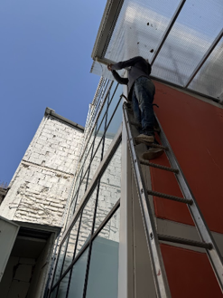
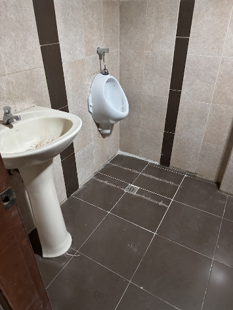

Cooperativa San José
Intervención arquitectónica para la Oficina Matriz de la Cooperativa San José. El proyecto buscó unificar la identidad visual de la institución mediante el uso de transparencias, iluminación dirigida y una zonificación clara que mejora la experiencia del usuario.

